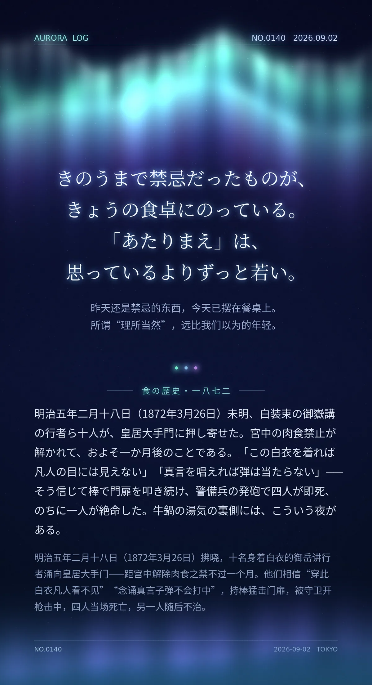

きのうまで禁忌だったものが、きょうの食卓にのっている。「あたりまえ」は、思っているよりずっと若い。（昨天还是禁忌的东西，今天已摆在餐桌上。所谓“理所当然”，远比我们以为的年轻。）
明治五年二月十八日（1872年3月26日）未明、白装束の御嶽講の行者ら十人が、皇居大手門に押し寄せた。宮中の肉食禁止が解かれて、およそ一か月後のことである。「この白衣を着れば凡人の目には見えない」「真言を唱えれば弾は当たらない」——そう信じて棒で門扉を叩き続け、警備兵の発砲で四人が即死、のちに一人が絶命した。（1872年3月26日拂晓，十名身着白衣的御岳讲行者涌向皇居大手门——距宫中解除肉食之禁不过一个月。他们相信“穿此白衣凡人看不见”“念诵真言子弹不会打中”，持棒猛击门扉，被守卫开枪击中，四人当场死亡，另一人随后不治。）
冷知识由执笔的模型自行查证。逐条断言、来源与所引原句存档在纯文字副本里，未经程序逐字校验，留作事后核实。